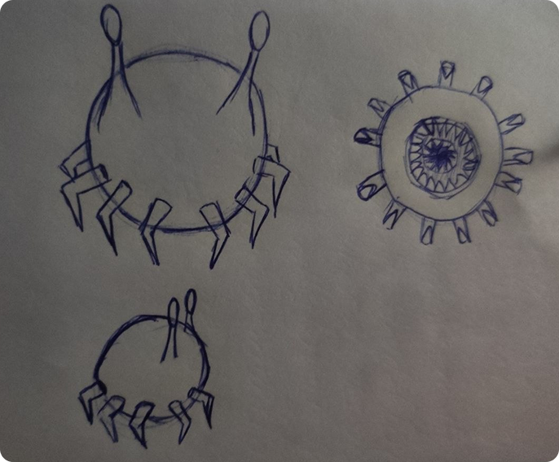

Существо


Проект был разработан полностью с нуля, начиная с формирования базовой идеи и общего концепта. На начальном этапе особое внимание уделялось поиску подходящего направления: прорабатывались различные варианты формы, стилистики и характерных особенностей будущего решения. В процессе работы было рассмотрено множество дизайнерских концепций, каждая из которых анализировалась с точки зрения функциональности, эстетики и соответствия поставленным задачам.

Данная модель была создана в Blender, где были проработаны её форма, геометрия и основные детали. После завершения этапа моделирования объект был перенесён в Substance Painter, где выполнялось текстурирование.
Программы: